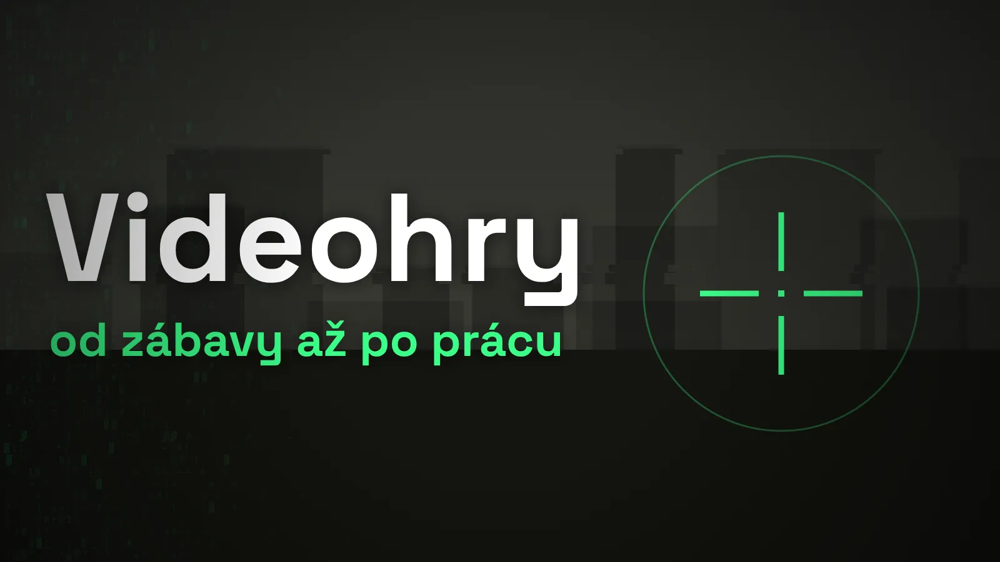
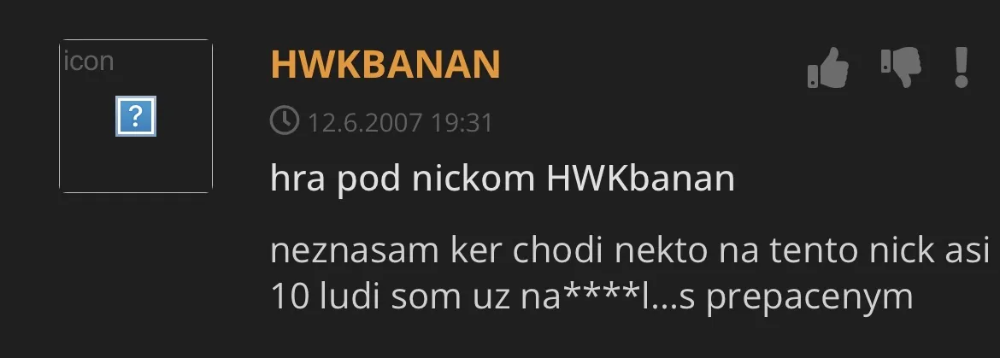

Blog ·
Counter-Strike: kliatba alebo požehnanie?
Od prvého počítača s Bombermanom cez CS 1.5 u kamošov, modovanie GTA San Andreas, dlhé večery pri FIFA a covidové noci pri Counter-Strike až po deň, keď vyšlo CS2. Z hier sa mi medzitým stala práca.

Prvý počítač a Bomberman. Potom CS 1.5 u kamošov. GTA San Andreas, ktoré sme chodili modovať k ďalšiemu kamošovi. Dlhé večery pri FIFA s partiou, osamelé noci pri singleplayerovkách a covidové večery pri Counter-Strike, Minecrafte a plechovke niečoho chladeného.
A potom deň, keď vyšlo CS2. Vtedy som skončil. Medzitým sa mi z hier stala práca: organizoval som turnaje, robil produkciu eventov, livestreamy a grafiku do vysielaní, aj na ESL. Ale tento článok je o hre, pri ktorej som strávil najviac času: Counter-Strike.
- 27. 9. 2023vyšlo CS2. V ten deň som skončil
- Top 15na serveri, nonstop
- 1 zápasvo firemnej e-športovej lige. Prehra, ale medaila doma
Counter-Strike: od 1.5 po CS2
u kamošovdoma
- CS 1.5u kamošov, presnejšie u Nina a u Lofiho
- CS 1.6potom sme ho mali už všetci. Komunitné servery, každý mal svoj obľúbený (napríklad FUN server na Fakahede). Classic servery mal Gamesites aj Fakaheda. Mňa bavili servery, kde sa hrali Assault, Nuke, Train, Aztec a občas Westwood
- Sourcenajkratšie obdobie. Hral som ho väčšinou sám a potom zase späť na 1.6
- Global Offensiveprvá verzia, ešte bez skinov. Neviem, či som to nemal dokonca aj na PlayStation 3. Pamätám si, keď som ho Adamovi kúpil cez Steam a on mi to zaplatil pizzou, keď sme išli na dozvuky po maturitách. A práve GO mi neskôr prinieslo aj prácu
- Ranky a skinycompetitive, nonstop grind. Potom prišli skiny a začali to hrať všetci
- StormRIP
- Republeagueorganizovali sme turnaje a celú produkciu okolo nich. Najlepšie zápasy nájdeš na stránke Kto som. Plus som robil ďalšie cool veci pre ESL
- CS227. 9. 2023. V deň vydania som s e-športami skončil
Pri 1.6 ešte jedno. U Tomáša na počítači sme mali v CS-ku tímy pomenované Kalachoviny a Aztegoviny. A Nino mal doma od staršieho brata nainštalovaný český dabing. Keď si hodil granát, postava povedala: „Ale prdy.“ Na malé decká celkom úlet.
Od komunitných serverov k rankom a skinom
V 1.6 a v Source sa hralo na komunitných serveroch. Prišiel si, hral si, odišiel si. Na začiatku to tak bolo aj v Global Offensive. Lenže GO malo od začiatku aj competitive režim s rankami. A ranky robia s hlavou svoje: vyhráš, stúpneš, chceš ešte jeden zápas. Dopamín. Grindil som nonstop.
Potom prišli skiny a hra nabrala obrovskú popularitu. Zbrane zrazu mali hodnotu v reálnych peniazoch a z CS-ka sa stala tlačiareň na peniaze. S tým prišli aj rôzne kasína, kde sa hralo o skiny. Gambling, s ktorým bol veľký problém, hlavne medzi mladými.
De_westwood, moja mapa
Westwood je klasika. Boli to servery, kde sa striedali mapy, nejaké classic servery, možno z Gamesites.cz, už to presne nepoviem. A tam bol aj Westwood, kde vždy vládol cirkus. Bol som tam jeden z lepších, nonstop v top 15.
Poznali sme sa tam s viacerými ľuďmi a bola to sranda. Bola to reálna online komunita. Ja som to tak v živote nevnímal, pre mňa to boli stále cudzí ľudia. Ale každý deň sme do seba strieľali, písali si a zdieľali veci, ktoré nás bavili.
Cudzí ľudia, s ktorými som sa každý deň stretával. Cez zameriavač.
Takto vyzeral de_westwood v CS 1.6. Video: YouTube.
tvbanan
Prezývka? Netuším, ako vznikla. Keď som hrával Trackmaniu, volal som sa tvbanan, Televízia Banan. Prečo, neviem. Ale na tom bolo to super, že taký nik nemal. Bol môj.
V tíme na Trackmanii som sa potom prepísal a pridal klanový tag. Bol to Hamachi War Klan, takže tag klanu a za ním banan: HWKbanan. Vrchol kariéry.
Dôkaz? Na Plnehry.sk mám dodnes komentár pod Trackmania Nations ESWC. Mal som 12 rokov.

(absolútne netuším, čo tým chcel autor povedať)
Medaila za jeden zápas
Vrchol? Keď sme hrali e-športovú ligu. Bola to firemná liga, čiže nič moc. Síce sme prehrali, ale nevadí: máme z toho medailu doma. Za jeden zápas, ktorý som odohral.
Zlom: CS2 a MacBook
Presne v deň, keď vyšlo CS2, som prestal. Neviem prečo, ale tak to vyšlo. Vtedy som už ani nemal herný počítač, len MacBook. Takže som na ňom mohol hrať tak akurát Hearthstone Battlegrounds. Smutné.
Čo mi to dalo
V podstate polovicu kariéry. Z hrania sa stali turnaje, ktoré som organizoval, produkcia eventov, livestreamy a grafika do vysielaní. Skúsenosti z gamingu ma dostali na miesta, kam by som sa bez nich nedostal. Ak nemáš ten herný „knowledge“, nedostaneš sa tam. Celý príbeh nájdeš na stránke Kto som.
Čo hrám dnes?
Život. Haha.
A občas plejko trojku.
Teraz hry stoja. Absolútne nič.
A ty? Čo si hral a prečo si prestal? Napíš mi, rád si to prečítam.
Chceš si niečo také vyskúšať sám? Na 3-hodinovej session ťa to naučím na tvojich vlastných veciach.
15 min hovor zadarmo